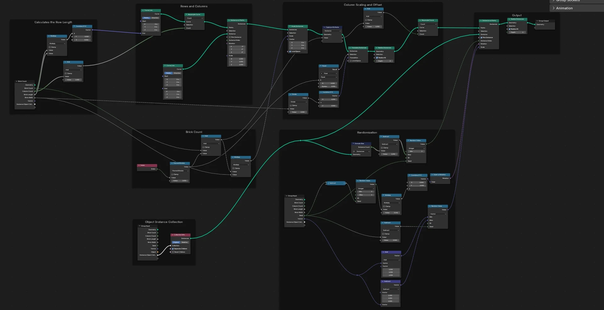
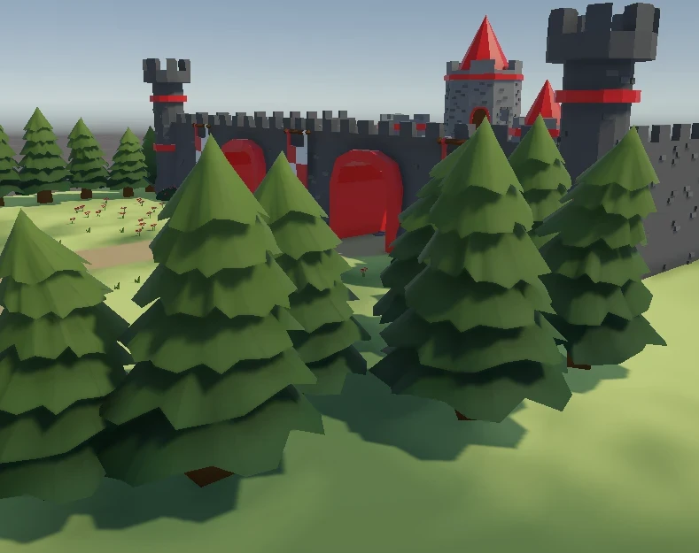

BattleWall
2025 · Mixed Reality Game · Team of 4 · 6 weeksA mixed-reality arcade game where two players throw virtual soldiers onto a shared battlefield, boosted by power-ups, while an audience watches the battle unfold on a massive shared screen.
My tech art on this project: the stylized water shader (Shader Graph), the power-up aura VFX for Attack, Defense and Speed (VFX Graph + Shader Graph), the meteor world-event VFX, procedural stone slabs built with Geometry Nodes, a gradient tree shader — plus modeling the entire map and its assets, and editing the trailer.
What I did

